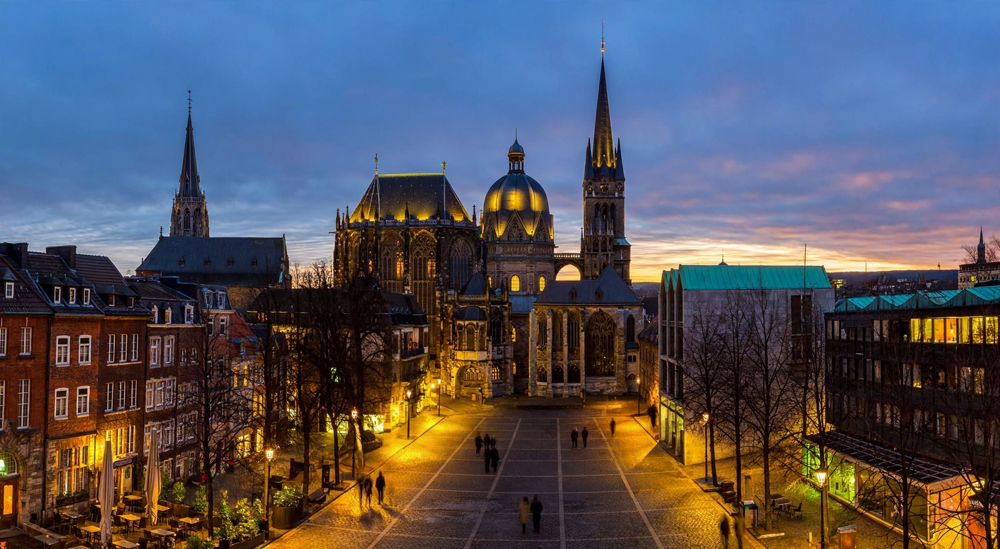

Aachen

Aachen (French: Aix-la-Chapelle) is a spa city in North Rhine-Westphalia, Germany, near the borders with Belgium and the Netherlands. Long settled for its hot springs — the Romans built baths here as Aquae Granni — Aachen rose to fame as the favourite residence of Charlemagne, who made it the capital of his Frankish empire.
History
Charlemagne built a great palace complex at Aachen, including the Palatine Chapel (consecrated 805), modelled on San Vitale in Ravenna, which survives as the core of Aachen Cathedral. He died here in 814 and was buried in the chapel. From 936 to 1531 the cathedral was the coronation church of the German kings, beginning with Otto I, and the city became a major pilgrimage centre for its four great relics, displayed in the Aachen pilgrimage every seven years.
A free imperial city, Aachen hosted the congresses that ended the War of the Austrian Succession (1748) and settled European affairs in 1818. The city was heavily damaged in the Second World War and was the first major German city captured by the Allies, in October 1944.
Today
Aachen Cathedral was among the first sites inscribed on the UNESCO World Heritage List in 1978. The city is home to RWTH Aachen University, one of Germany's leading technical universities, and is known for its cathedral treasury, its carnival, and its gingerbread-like Printen. The annual CHIO Aachen equestrian festival and the International Charlemagne Prize, awarded for services to European unity, maintain its European profile.
See also: Charlemagne, Carolingian Empire, Alcuin.